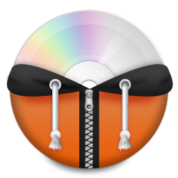

Vila: Konoha
Telefone: 4002-8922
Email: NarutoUzumaki123@gmail.com
Me tornar hokage e proteger meus amigos e a vila
Estudent Of School Academy Of Konoha
Promovido a Genin
Title Of Hokage
Promovido a Hokage, líder supremo da vila, por suas conquistas em guerra.
A mãe de Naruto, Kushina Uzumaki, pertence ao país dos redemoinhos. Além disso, no país em questão eles usam o símbolo espiral em sua vila.
 Conteudos extras